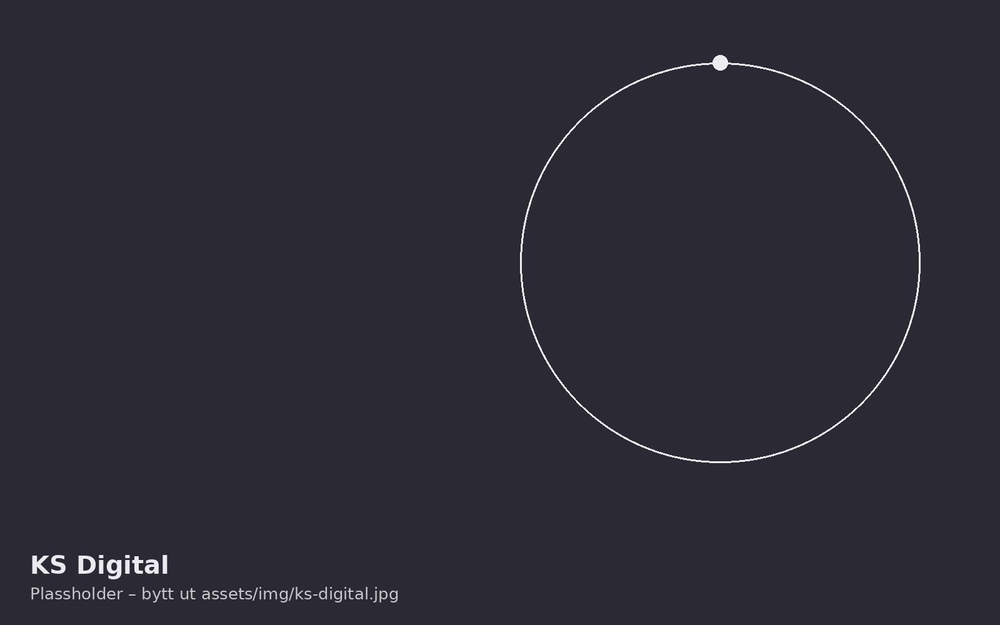

Offentlig sektor
KS Digital
Felles digital tilskuddsforvaltning: en ny digital tjeneste for tilskudd til bruk i kommuner, fylkeskommuner og stat.

- Kunde
- KS Digital
- Sektor
- Offentlig sektor
- Tjenesteområder
- InnsiktTransformasjonGjennomføring
- Fagområder
- Sourcing
- IT Operations
- Arkitektur
- Prosjektledelse
- Analyse
Problemstilling
Tilskudd søkes og forvaltes i dag på mange måter, med ulike prosesser og tekniske løsninger. Det gir et fragmentert landskap og en krevende arbeidsflyt for både søker og saksbehandler. Søkere har vanskelig for å holde oversikt over tilskuddsordningene, og de må bruke ulike portaler og fremgangsmåter for å søke og rapportere på tildelte midler.
Gjennomføring
KS Digital lager en ny digital tjeneste for tilskudd i samarbeid med KS og Kommunal- og distriktsdepartementet (KDD). Figment leverer teknisk prosjektledelse og har ledet arbeidsstrømmene for arkitekturutvikling, gapanalyse, konseptualisering, workshops, innsikt, kravspesifikasjon, estimering og planlegging. Dette omfatter også anskaffelsesrådgivning og dialog med leverandørmarkedet.
- Kartlegginger og utredninger
- Arkitekturutvikling
- IT-strategi
- Forretningsutvikling
- Gevinstrealisering
Resultat
Figment kartla konseptets tekniske side og fikk prosjektet vedtatt i kommunal samstyringsstruktur. Prosjektorganisasjonen er etablert og forankret i KS Digital. Markedsdialogen er gjennomført, og konseptet er avstemt med eksterne og interne interessenter. Forretningsplanen er utarbeidet, og utviklingsarbeidet er godt i gang, inkludert komplekse anskaffelser som skal inngå i tjenestens digitale økosystem.